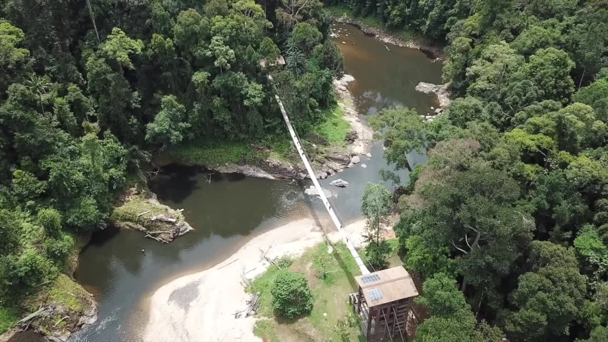
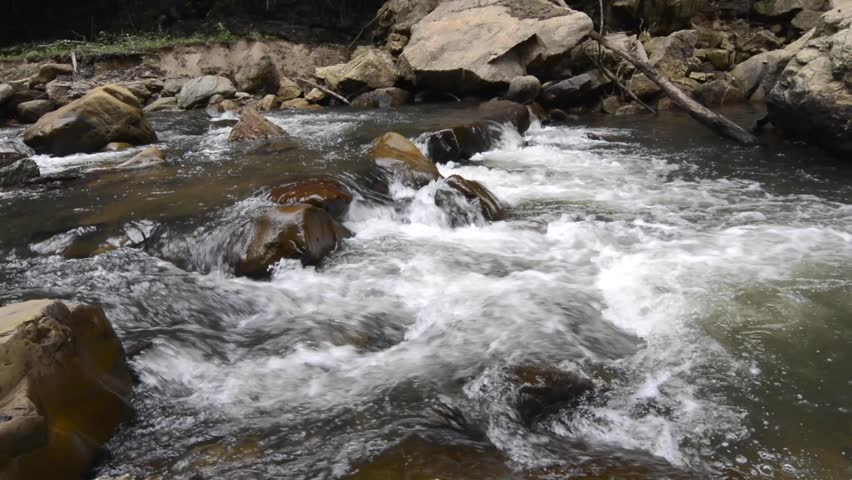
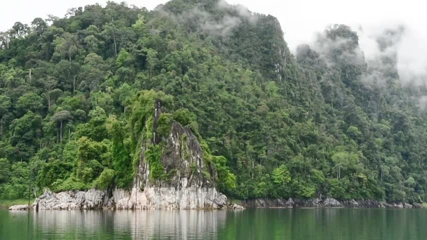
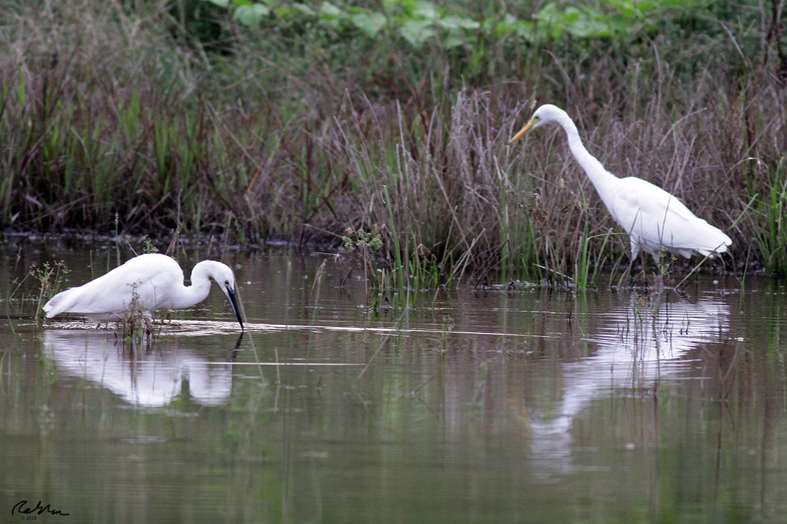

Before the implementation of tarmac roads, railways and air transportation in the country, the Malaysian rivers and their tributaries were the main means of transport and communication. Until the advent of the 20th century, Malaysian rivers were the main means of communication and transport for social meetings and trade due to the difficult terrain or geological and geographical aspects, combined with the fact that the country was still poorly formed
Water flowed continuously from its sources in the highlands and mountain ranges, especially during the wet monsoon seasons, bringing with them alluvial soils that enrich the lowlands where agriculture practise thrives. And we will find, of course, that the rivers and streams are full of countless plants and vegetation, and great variety of fish and aquatic animals, such as reptiles, amphibians and insects, which need water to maintain their lives, like humans.
Mammals, such as otters, can be seen on the banks of the river, while birds feeding on fish and crustaceans, such as kingfishers, sandpipers, hawks and eagles, can also be seen perching on the trees or scrounging on the ground. Fireflies almost always are found in the backwaters that have the trees and plants required for its sustenance.Among the popular fishes found in the rivers of Malaysia that are made into favorite dishes include the patin, kelah, kerau, toman, jelawat and kelisa.
Nowadays, as in the old days, rivers are not only for moving from one place to another, although there are still many sections in the undeveloped interiors of Malaysia that depend entirely on their use for means of transport. Today, they are not only sources for domestic and commercial electricity generation in the country, but they also offer wide-ranging activities for nature lovers and adventurers.
Activities that utilize the existence of rivers include :
The multi-diversity of flora and fauna along riverbanks make it very appropriate places to venture around for wildlife and nature lovers and trekkers. The mangrove trees, dipterocarps and palms, and the fascinating and wonderful multitudes of small to large flowers and plants, all the beauties made by God, are there for us to behold.
It is the responsibility of all to ensure that our rivers are not destroyed, poisoned and polluted, and that all living beings can enjoy them in pristine states.